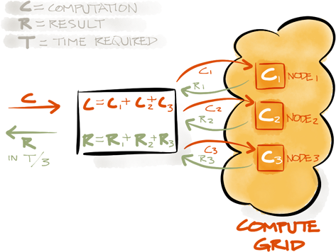

Key In-Memory Fabric Features
Apache Ignite In-Memory Data Fabric is a high-performance, integrated and distributed in-memory platform for computing and transacting on large-scale data sets in real-time, orders of magnitude faster than possible with traditional disk-based or flash technologies.
| Data Grid | Compute Grid | Service Grid | Streaming | Hadoop Acceleration |
| Distributed File System | Advanced Clustering | Distributed Messaging | Distributed Events | Distributed Data Structures |
Data Grid
Ignite In-Memory Data Fabric stores their data in-memory as opposed to traditional Database Management Systems that utilize disk as their primary storage mechanism. By utilizing system memory rather than disk, Ignite In-Memory Data Fabric is orders of magnitude faster than traditional DBMS systems.

- Distributed In-Memory Caching
- Lightning Fast Performance
- Elastic Scalability
- Distributed In-Memory Transactions
- Distributed In-Memory Queue and Other Data Structures
- Web Session Clustering
- Hibernate L2 Cache Integration
- Tiered Off-Heap Storage
- Distributed SQL Queries with Distributed Joins
Basic cache operations example.
Ignite ignite = Ignition.ignite();
// Get an instance of named cache.
final IgniteCache<Integer, String> cache = ignite.jcache("cacheName");
// Store keys in cache.
for (int i = 0; i < 10; i++)
cache.put(i, Integer.toString(i));
// Retrieve values from cache.
for (int i = 0; i < 10; i++)
System.out.println("Got [key=" + i + ", val=" + cache.get(i) + ']');
// Remove objects from cache.
for (int i = 0; i < 10; i++)
cache.remove(i);
// Atomic put-if-absent.
cache.putIfAbsent(1, "1");
// Atomic replace.
cache.replace(1, "1", "2");
Transaction example demonstrating multiple reads and puts done atomically.
Ignite ignite = Ignition.ignite();
// Clone every object we get from cache, so we can freely update it.
IgniteCache<Integer, Account> cache = ignite.jcache("cacheName");
try (IgniteTx tx = Ignition.ignite().transactions().txStart()) {
Account acct = cache.get(acctId);
assert acct != null;
// Deposit $20 into account.
acct.setBalance(acct.getBalance() + 20);
// Store updated account in cache.
cache.put(acctId, acct);
tx.commit();
}
Synchronously acquire and release lock by key.
Ignite ignite = Ignition.ignite();
// Get an instance of named cache.
final GridCache<String, Integer> cache = ignite.jcache("cacheName");
// Lock cache key "Hello".
Lock lock = cache.lock("Hello");
lock.lock();
try {
cache.put("Hello", 11);
cache.put("World", 22);
}
finally {
lock.unlock();
}
Person class definition.
private static class Person implements Serializable {
/** Person ID (indexed). */
@CacheQuerySqlField(index = true)
private long id;
/** Organization ID (indexed). */
@CacheQuerySqlField(index = true)
private long orgId;
/** First name (not-indexed). */
@CacheQuerySqlField
private String firstName;
...
}
Simple distributed SQL query.
Ignite ignite = Ignition.ignite();
// Get an instance of named cache.
GridCache<Long, Person> cache = ignite.jcache("cacheName");
// Create query which selects salaries based on range.
CacheQuery<Map.Entry<Long, Person>> qry =
cache.queries().createSqlQuery(Person.class, "salary > ? and salary <= ?");
// Execute queries for salary ranges.
print("People with salaries between 0 and 1000: ", qry.execute(0, 1000).get());
print("People with salaries between 1000 and 2000: ", qry.execute(1000, 2000).get());
Person class definition.
private static class Person implements Serializable {
/** Person ID (indexed). */
@CacheQuerySqlField(index = true)
private long id;
/** Organization ID (indexed). */
@CacheQuerySqlField(index = true)
private long orgId;
/** First name (not-indexed). */
@CacheQuerySqlField
private String firstName;
...
}
Distributed query with SQL join between Person and Organization.
Ignite ignite = Ignition.ignite();
// Get an instance of named cache.
GridCache<Long, Person> cache = ignite.jcache("cacheName");
// Create query which joins on 2 types to select people for a specific organization.
CacheQuery<Map.Entry<Long, Person>> qry =
cache.queries().createSqlQuery(Person.class, "from Person, Organization " +
"where Person.orgId = Organization.id " +
"and Organization.name = ?");
// Execute queries for find employees for different organizations.
print("Following people are 'Ignite' employees: ", qry.execute("Ignite").get());
print("Following people are 'Other' employees: ", qry.execute("Other").get());
Compute Grid
Compute Grid provides the means for parallel processing of CPU or otherwise resource intensive tasks including traditional High Performance Computing (HPC) and Massively Parallel Processing (MPP).
- Dynamic Clustering
- Fork-Join & MapReduce Processing
- Distributed Closure Execution
- Load Balancing and Fault Tolerance
- Distributed Messaging and Events
- Linear Scalability
- ExecutorService
Print out hello message on all nodes.
Ignite ignite = Ignition.ignite();
// Print out hello message on all nodes.
ignite.compute().broadcast(
new IgniteRunnable() {
@Override public void run() {
System.out.println(">>> Hello Node! :)");
}
}
);
Iterate through all words in a sentence and print each word on different nodes in the cluster.
Ignite ignite = Ignition.ignite();
Collection<IgniteFuture> futs = new ArrayList<>();
// Enable asynchronous mode.
IgniteCompute compute = ignite.compute().withAsync();
// Iterate through all words in the sentence and create runnable jobs.
for (final String word : "Print words using runnable".split(" ")) {
// Execute runnable on some node.
compute.run(new IgniteRunnable() {
@Override public void run() {
System.out.println("Printing '" + word + "' on this node from ignite job.");
}
});
futs.add(compute.future());
}
// Wait for all futures to complete.
for (IgniteFuture<?> f : futs)
f.get();
This example splits a phrase into collection of words, computes their length on different nodes and then computes total amount of non-whitespaces characters in the phrase.
Ignite ignite = Ignition.ignite();
// Execute closure on all cluster nodes.
Collection<Integer> res = ignite.compute().apply(
new IgniteClosure<String, Integer>() {
@Override public Integer apply(String word) {
System.out.println("Printing '" + word + "' on this node from Ignite job.");
// Return number of letters in the word.
return word.length();
}
},
// Job parameters. Ignite will create as many jobs as there are parameters.
Arrays.asList("Count characters using closure".split(" "))
);
int sum = 0;
// Add up individual word lengths received from remote nodes.
for (int len : res)
sum += len;
Service Grid
Ignite Service Grid allows you to have complete control over services being deployed on the
cluster. It allows you to control how many instances of your service should be deployed on each cluster
node, ensuring proper deployment and fault tolerance. Service Grid guarantees continuous availability
of all deployed services in case of node failures.
- Automatically Deploy Multiple Instances of a Service
- Automatically Deploy a Service as Singleton
- Automatically Deploy Services on Node Start-Up
- Fault Tolerant Deployment
- Un-Deploy Any of the Deployed Services
- Get Service Deployment Topology Information
- Access Remotely Deployed Service via Service Proxy
An example of how a distributed service may be implemented
// Simple service implementation.
public class MyIgniteService implements Service {
// Example of ignite resource injection. All resources are optional.
// You should inject resources only as needed.
@IgniteInstanceResource
private Ignite ignite;
...
@Override public void cancel(ServiceContext ctx) {
// No-op.
}
@Override public void execute(ServiceContext ctx) {
// Loop until service is cancelled.
while (!ctx.isCancelled()) {
// Do something.
...
}
}
}
and deployed.
Ignite ignite = Ignition.ignite();
...
IgniteServices svcs = ignite.services();
IgniteFuture<?> fut = svcs.deployClusterSingleton("myClusterSingleton", new MyIgniteService());
// Wait for deployment to complete.
fut.get();
Streaming
Streaming processing addresses a large family of applications for which traditional processing methods and disk-based storages, like databases or file systems, fall short. Such applications are pushing the limits of traditional data processing infrastructures.

Streaming support allows to query into rolling windows of coming data, and enable users to answer
such questions as “What are the 10 most popular products over last 2 hours?”, or “What is the average
product price in a certain category for the past day?”.
Another most common use case for stream processing is the ability to control and properly pipeline
distributed events workflow. As events are coming into the system at high rates, the processing of
events is split into multiple stages and each stage has to be properly routed within a
cluster for processing.
- Programmatic Querying
- Customizable Event Workflow
- At-Least-Once Guarantee
- Sliding Windows
- Data Indexing
- Distributed Streamer Queries
- Co-Location With In-Memory Data Grid
Hadoop Acceleration
Hadoop Accelerator enhances existing Hadoop technology to enable fast data processing using the tools
and technology your organization is already using today.
Ignite’s in-memory accelerator for Hadoop is based on the industry’s first dual-mode,
high-performance in-memory file system that is 100% compatible with Hadoop HDFS, and an in-memory
optimized MapReduce implementation. In-memory HDFS and in-memory MapReduce provide easy to use
extensions to disk-based HDFS and traditional MapReduce, delivering up to 100x faster performance.
In-memory accelerator for Hadoop requires minimal to no integration and works with any commercial or
open source version of Hadoop, including Cloudera, HortonWorks, MapR, Apache, Intel, AWS, as well
as any other Hadoop 1.x and Hadoop 2.x distributions.
- 100x Faster Performance
- In-Memory MapReduce
- Highly Optimized In-Memory Processing
- Dual Mode - Standalone File System/Primay Caching Layer for HDFS
- Highly Tunable Read-Through and Write-Through Behavior
Distributed File System
One of the unique capabilities of Ignite is a file system interface to its in-memory data called
Ignite File System (IFS). IFS delivers similar functionality to Hadoop HDFS, including the ability to
create a fully functional file system in memory. In fact, IFS is at the core of
Ignite’s In-Memory Hadoop Accelerator.
The data from each file is split on separate data blocks and stored in cache.
Developers can access each file’s data with a standard Java streaming API. Moreover, for each part
of the file a developer can calculate an affinity and process the file’s content on corresponding
nodes to avoid unnecessary networking.
- Provides Typical File System “View” on In-Memory Caches
- List Directories or Get Information for a Single Path
- Create/Move/Delete Files or Directories
- Write/Read Data Streams into/from Files
Advanced Clustering
Ignite In-Memory Data Fabric provides one of the most sophisticated clustering technologies on
Java Virtual Machine (JVM). Ignite nodes can automatically discover each other.
This helps to scale the cluster when needed, without having to restart the whole cluster. Developers
can also leverage from Ignite’s hybrid cloud support that allows establishing connection
between private cloud and public clouds such as Amazon Web Services, providing them
with best of both worlds.
- Dynamic Topology Management
- Automatic Discovery on LAN, WAN, and AWS
- Automatic “Split-Brain” (i.e. Network Segmentation) Resolution
- Unicast, Broadcast, and Group-Based Message Exchange
- On-Demand and Direct Deployment
- Support for Virtual Clusters and Node Groupings
Broadcast message to multiple nodes in the cluster.
Ignite ignite = Ignition.ignite();
// Create runnable job.
IgniteRunnable r = new IgniteRunnable() {
@Override
public void run() {
System.out.println("Hello World");
}
};
// Broadcast to all cluster nodes.
ignite.compute().broadcast(r);
// Broadcast to all remote nodes.
ignite.compute(ignite.cluster().forRemotes()).broadcast(r);
Unicast message to a node in the cluster.
Ignite ignite = Ignition.ignite();
// Create runnable job.
IgniteRunnable r = new IgniteRunnable() {
@Override
public void run() {
System.out.println("Hello World");
}
};
// Unicast to some random node picked by load balancer.
ignite.compute(ignite.cluster().forRandom()).run(r);
// Unicast to some node with CPU load less than 50%.
ignite.compute(ignite.cluster().forPredicate(new IgnitePredicate<ClusterNode>() {
@Override
public boolean apply(ClusterNode n) {
return n.metrics().getCurrentCpuLoad() <0.5;
}
})).run(r);
Distributed Messaging
Apache Ignite provides high-performance cluster-wide messaging functionality to exchange data via publish-subscribe and direct point-to-point communication models.
- Support for Topic-Based Publish-Subscribe Model
- Support for Direct Point-to-Point Communication
- Pluggable Communication Transport Layer
- Support for Message Ordering
- Cluster-Aware Message Listener Auto-Deployment
Send and receive ordered messages
Ignite ignite = Ignition.ignite();
// Add listener for ordered messages on all nodes.
ignite.message().remoteListen("MyOrderedTopic", new IgniteBiPredicate<UUID, String>() {
@Override public boolean apply(UUID nodeId, String msg) {
System.out.println("Received ordered message [msg=" + msg + ", fromNodeId=" + nodeId + ']');
return true; // Return true to continue listening.
}
});
// Send ordered messages to remote nodes nodes.
for (int i = 0; i < 10; i++)
ignite.message(ignite.cluster().forRemotes()).sendOrdered("MyOrderedTopic", Integer.toString(i), 0);
Send and receive unordered messages
Ignite ignite = Ignition.ignite();
// Add listener for unordered messages on all nodes.
ignite.message().remoteListen("MyUnOrderedTopic", new IgniteBiPredicate<UUID, String>() {
@Override public boolean apply(UUID nodeId, String msg) {
System.out.println("Received unordered message [msg=" + msg + ", fromNodeId=" + nodeId + ']');
return true; // Return true to continue listening.
}
});
// Send unordered messages to remote nodes.
for (int i = 0; i < 10; i++)
ignite.message(ignite.cluster().forRemotes()).send("MyUnOrderedTopic", Integer.toString(i));
Distributed Events
Distributed events functionality allows applications to receive notifications about cache events
occurring in distributed grid environment. Developers can use this functionality to get notified
about remote tasks executions or any cache data changes within the cluster.
In Ignite, event notifications can be grouped together and sent in batches and/or timely intervals.
Batching notifications help attain high cache performance and low latency.
- Subscribe Local and Remote Listeners
- Enable and Disable any Event
- Provide Local and Remote Filters for Fine-Grained Control Over Notifications
- Automatic Batching of Notifications for Enhanced Performance
Subscribe to remote notifications for cache data updates.
Ignite ignite = Ignition.ignite();
// Get an instance of named cache.
final IgniteCache<Integer, String> cache = ignite.jcache("cacheName");
// sample remote filter which only accepts events for keys
// that are greater than or equal to 10.
IgnitePredicate<CacheEvent> rmtLsnr = new IgnitePredicate<CacheEvent>() {
@Override public boolean apply(CacheEvent evt) {
System.out.println("Cache event: " + evt);
int key = evt.key();
return key >= 10;
}
};
// Subscribe to specified cache events on all nodes that have cache running.
ignite.events(ignite.cluster().forCacheNodes("cacheName")).remoteListen(null, rmtLsnr,
EVT_CACHE_OBJECT_PUT, EVT_CACHE_OBJECT_READ, EVT_CACHE_OBJECT_REMOVED);
// Generate cache events.
for (int i = 0; i < 20; i++)
cache.put(i, Integer.toString(i));
Distributed Data Structures
Ignite allows for most of the data structures from java.util.concurrent framework to be used in a distributed fashion. For example, you can take java.util.concurrent.BlockingDeque and add something to it on one node and poll it from another node. Or have a distributed Primary Key generator, which would guarantee uniqueness on all nodes.
- Concurrent Map
- Distributed Queues and Sets
- AtomicLong
- AtomicSequence
- AtomicReference
- CountDownLatch
Distributed Queue example.
Ignite ignite = Ignition.ignite();
CollectionConfiguration colCfg = new CollectionConfiguration();
colCfg.setCacheName("cacheName");
// Non-colocated queue which will be distributed
// across all data nodes.
IgniteQueue<String> queue = ignite.queue("queueName", 20, colCfg);
// Add queue elements.
for (int i = 0; i < 20; i++)
queue.add("Value " + Integer.toString(i));
// Poll queue elements.
for (int i = 0; i < 20; i++)
System.out.println("Polled value: " + queue.poll());
Distributed Set example.
Ignite ignite = Ignition.ignite();
// Initialize new set.
IgniteSet<String> set = ignite.set("setName", null);
// Add set elements.
for (int i = 0; i < 10; i++)
set.add(Integer.toString(i));
// Iterate over set.
for (String item : set)
System.out.println("Set item: " + item);
Distributed AtomicSequence example.
Ignite ignite = Ignition.ignite();
// Initialize atomic sequence.
IgniteAtomicSequence seq = ignite.atomicSequence("seqName", 0, true);
for (int i = 0; i < 100; i++)
System.out.println("Next sequence value: " + seq.incrementAndGet());